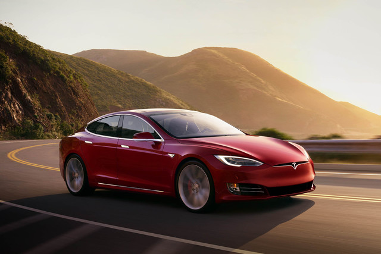

auto's bestaan al langer dan vandaag. de eerste auto werd uitgevonden in 1886. toen zagen de autos er heel anders uit dan nu. en hij kon maar 0.75pk generen. dat is natuurlijk niks in vergelijking met de auto's van vandaag. de gemiddelde auto heeft deze dag rond de 90pk. maar we hebben ook al auto's met meer dan 1000PK?! maar hierover vertel ik later meer in het blad. ook gebruiken we tegenwordig voor veel meer dingen dan alleen vervoer. natuurlijk worden auto's voor het grootste deel nog als vervoer gebruikt. er zijn ook veel auto's die voor het vermaak van de mens word gebruikt.

Electrisch rijden. tegenwordig hebben we auto's die beter voo rhet millieu zijn. we stappen dus af van de benzine en we gaan rjden op zonne energie. er zijn veel voordelen aan electrice auto's maar er zijn natuurlijk ook nadelen namelijk: erg duur, speciale oplaadplek nodig, dure onderhoud, etc. een van de bekendste merken in de electrice wereld is tesla. het is een erg nieuw merk en het is eigendom van elon musk. deze auto's staan de de race wereld vooral bekend om de acceleratie. de acceleratie van de tesla model S P100D is van 0-100 in 2.7 seconde en dat is enorm snel voor een 5 deurs auto. de auto heeft daarom ook 680HP. een race beest dus.